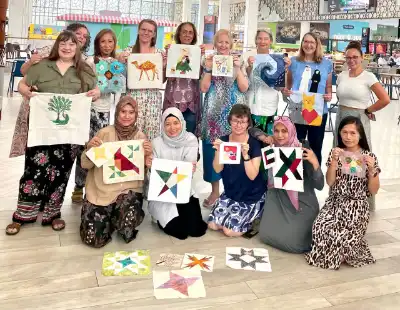
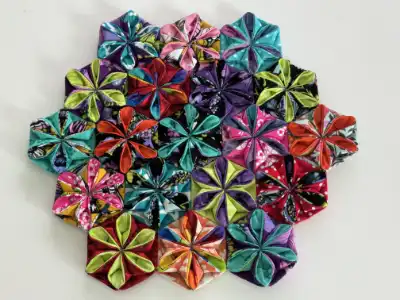
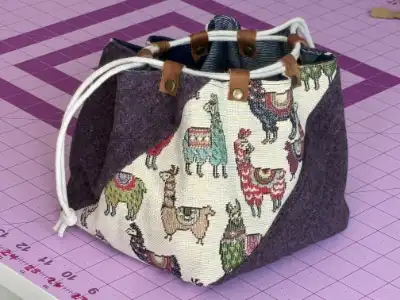

All About Capital City Sewing Club
We are a culturally and geographically diverse group of woman with a common interest in sewing. We
meet once a week for
a coffee morning, where we socialise and work on hand sewing projects. We also set up regular
workshops where we have the opportunity to teach each other new skills - sometimes they aren't even
sewing!
Most of us come from a quilting backbround, but amongst us there are very talented dress makers, bag
makers, cross stitchers, sashiko stitchers, etc. Some are very experience, having sewn for 30+
years, and others are complete beginners, only sewing their very first project after joining our
group - with us you will find a warm welcome, no matter your skill or experience.
What Are We Working On Now?
Hexie Flower Hot Pad
The Hexie Flower Hot Pad can also be used decoratively, like under a pot plant. It is hand sewn, using an origami technique, uses cotton fabric only, and is self-backed. The design is also expandable, so you can make it as large as you like, and any shape that the hexie block will allow.
Diagonal Box Pouch
This Japanese style pouch pattern comes in three different sizes. Thos versatile pouch has a drawstring closure and has so many uses from project bag to hand bag or purse. It is also fully reversible, so you can quickly and easily change up your look.